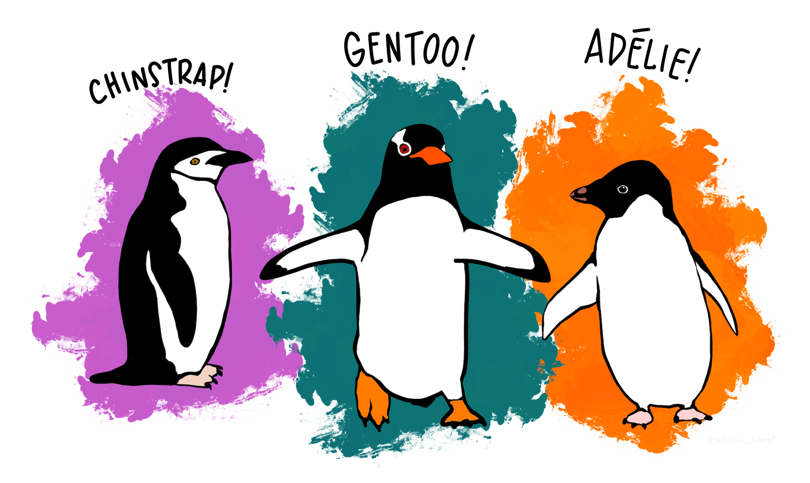

mass_flipper <- ggplot(data = penguins,
aes(x = flipper_length_mm,
y = body_mass_g)) +
geom_point(size = 3,
alpha = 0.8) +
theme_minimal() +
labs(title = "팔머 관측소 LTER 서식 펭귄 크기",
subtitle = "Adelie, Chinstrap, Gentoo 펭귄에 대한 물갈퀴 길이와 체질량",
x = "물갈퀴 길이(Flipper length) (mm)",
y = "체질량(Body mass) (g)") +
theme_minimal()
mass_flipper한글 PDF
한글 사랑
이미지


R 코드
표
표
gt 표
knitr::kable(
mtcars[1:6, 1:10]
)| mpg | cyl | disp | hp | drat | wt | qsec | vs | am | gear | |
|---|---|---|---|---|---|---|---|---|---|---|
| Mazda RX4 | 21.0 | 6 | 160 | 110 | 3.90 | 2.620 | 16.46 | 0 | 1 | 4 |
| Mazda RX4 Wag | 21.0 | 6 | 160 | 110 | 3.90 | 2.875 | 17.02 | 0 | 1 | 4 |
| Datsun 710 | 22.8 | 4 | 108 | 93 | 3.85 | 2.320 | 18.61 | 1 | 1 | 4 |
| Hornet 4 Drive | 21.4 | 6 | 258 | 110 | 3.08 | 3.215 | 19.44 | 1 | 0 | 3 |
| Hornet Sportabout | 18.7 | 8 | 360 | 175 | 3.15 | 3.440 | 17.02 | 0 | 0 | 3 |
| Valiant | 18.1 | 6 | 225 | 105 | 2.76 | 3.460 | 20.22 | 1 | 0 | 3 |
데이터
데이터 수집에 대해 궁금하신 분은 클릭하여 추가 학습하세요
팔머펭귄 데이터는 Kristen Gorman 박사와 남국 팔머 관측소(Palmer Station, Antarctica LTER)에서 수집되어 공공에 이용가능하게 공개되었습니다.
{palmerpenguins} 패키지 (Horst et al., 2020)를 통해 R에서 손쉽게 이용가능하게 되었고 원데이터는 Gorman et al. (2014) 에서 최초 공개되었다.
References
Gorman, K. B., Williams, T. D., & Fraser, W. R. (2014). Ecological sexual dimorphism and environmental variability within a community of antarctic penguins (genus pygoscelis). PloS One, 9(3), e90081. https://doi.org/10.1371/journal.pone.0090081
Horst, A. M., Hill, A. P., & Gorman, K. B. (2020). Palmerpenguins: Palmer archipelago (antarctica) penguin data. https://allisonhorst.github.io/palmerpenguins/